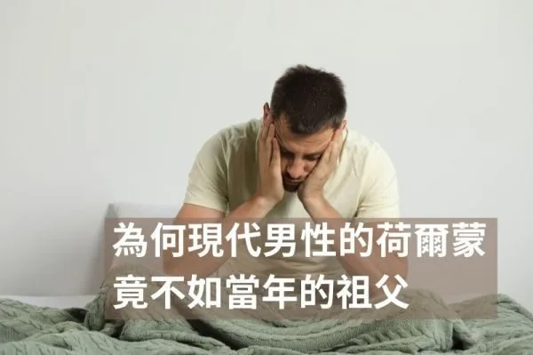
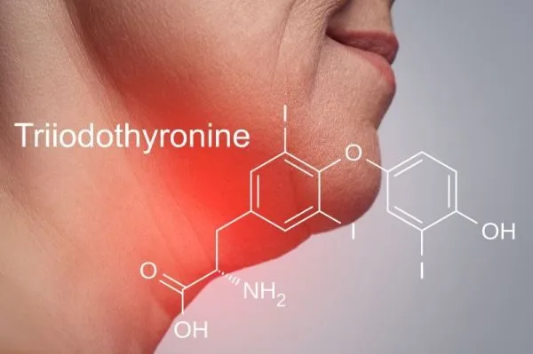
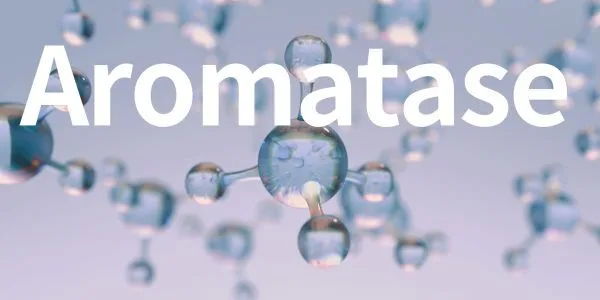
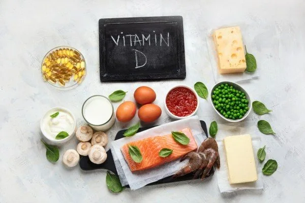
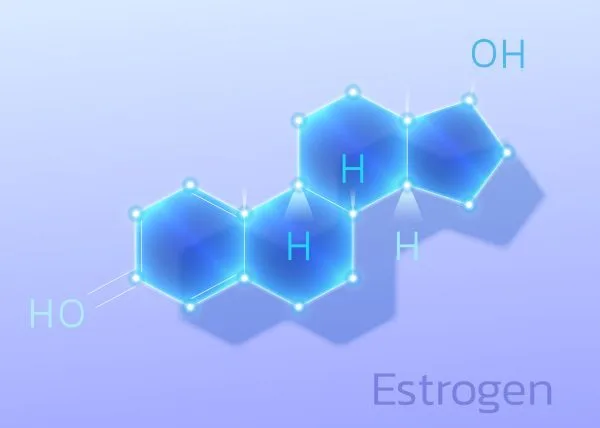
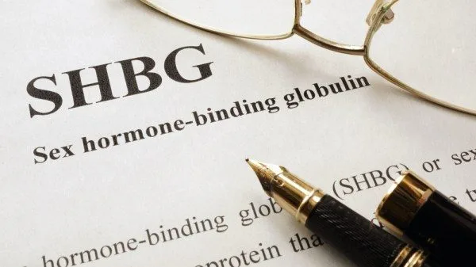
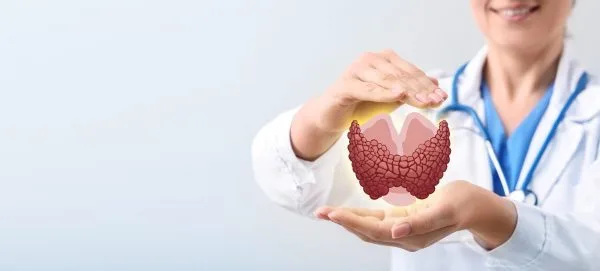
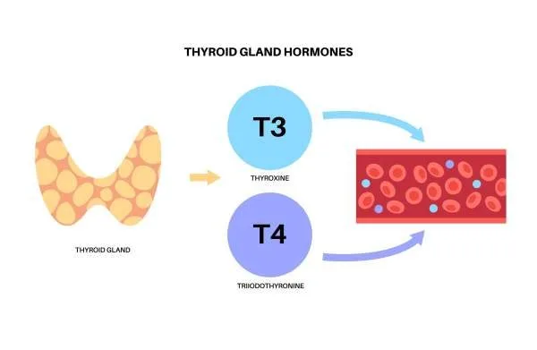

更年期後皮膚乾癢？先搞懂原因，再談保養
2026-09-11
停經後雌激素下降導致膠原蛋白與皮脂分泌逐年減少，口服膠原蛋白、大豆異黃酮與 Omega-3 能從內補充改善乾燥。

51 篇文章
停經後雌激素下降導致膠原蛋白與皮脂分泌逐年減少，口服膠原蛋白、大豆異黃酮與 Omega-3 能從內補充改善乾燥。

黃體期胰島素阻抗與食慾自然升高，減重策略需隨月經週期調整，黃體期應供應足量原型碳水以避免暴食。

脂肪組織裡的芳香化酶會把睪固酮轉換成雌激素，體脂越多轉換越多，形成睪固酮下降與體脂增加的惡性循環。

胖多囊以胰島素阻抗為核心、重在降胰島素；瘦多囊雄性素常來自腎上腺，需穩定血糖、重視睡眠與壓力管理，兩者治療方向不同。

光看 TSH 和 T4 正常，無法確認身體有足夠的 T3 進行代謝，部分患者需加驗 Total T3 以評估 T4 轉換效率。

體脂過低會因瘦素不足使月經消失，過高則造成瘦素阻抗與生育問題，體脂與代謝環境是影響女性生育力的重要關鍵。

骨頭是內分泌器官，造骨細胞分泌的骨鈣素參與血糖調控，需維生素 K2 活化，糖尿病患者骨密度正常仍可能有較高的骨折風險。

減重卡關常有多重原因，包括代謝下降、肌肉流失、荷爾蒙問題、藥物、睡眠、隱藏熱量與腸道菌相，需逐一查清楚再處理。

子宮肌瘤與雌激素代謝路徑相關，十字花科蔬菜、DIM補充、綠茶兒茶素與維生素D可改善代謝方向減緩肌瘤成長。

女性睪固酮從三十幾歲開始下降，停經後進一步下降，不足會影響肌肉、骨密度、認知與情緒，單獨補充雌激素無法解決。

Lara Briden 的《Hormone Repair Manual》認為子宮肌瘤與雌激素主導有關，可從維他命D、飲食與生活著手，嚴重仍需就醫。

心臟衰竭、老化的肌肉無力、記憶退化。三件看起來不相關的事，在細胞層面可能有同一個根源。2025 年 9 月，FDA 核准了史上第一個以「修復心磷脂」為機轉的藥物 elamipretide（SS-31）。

台灣禁用 rBST，但懷孕奶牛乳汁的雌激素會上升且人體有吸收，文中指出對健康的影響尚無定論，建議適度減少攝取。

油脂是大腦結構與賀爾蒙合成的重要原料，刻意滴油不進對大腦與內分泌不利，作者強調減重時不該恐油，要選擇優質油脂。

作者說明傳統療法增加乳癌風險主要來自合成黃體素，生物等同性荷爾蒙與經皮吸收較安全，有子宮者須搭配黃體酮，並重視肝臟與腸道代謝。

作者認為靜脈曲張不只是久站所致，女性荷爾蒙與 MMPs 會削弱血管壁，並建議補充維生素 C、攝取十字花科蔬菜、B群並改善便秘。

作者引用 JCEM 研究指出現代男性睪固酮每年約下降 1%，並從環境荷爾蒙、肥胖、壓力與睡眠談原因，提醒要檢測游離睪固酮與 SHBG。

食慾素是大腦的清醒總開關，葡萄糖會抑制它，所以午餐吃大量精緻碳水容易下午昏沉，作者建議白天低碳、晚上再適度攝取碳水。

生理期前的甜食渴望源於雌激素下降導致血清素濃度下跌，攝取富含色胺酸的食物與維生素B6、鎂可協助合成血清素。

早上喝咖啡沒感覺、晚上卻很清醒，可能是麩胺酸節律失衡，常與壓力和血糖不穩有關，應把白天的啟動拉回來而非多喝咖啡。

運動誘發的鳶尾素激活脂肪棕色化、改善血糖代謝、抑制肌肉衰退、促進神經保護，HIIT運動對提升鳶尾素效果最顯著。

多囊性卵巢症候群涉及胰島素阻抗和慢性發炎，控制胰島素是核心策略，透過低升糖飲食、運動、肌醇補充可改善排卵和月經。

抗胰島素素由免疫細胞分泌，升高時促發炎和胰島素阻抗，應透過低升糖飲食、運動、斷食和抗發炎食物來降低。

低碳適應後重新進食碳水可提升代謝靈活性、改善胰島素敏感度和甲狀腺荷爾蒙，讓身體脫離節能模式，體重可能持續下降。

BDNF是維持大腦功能的關鍵蛋白，高強度運動、斷食和深層睡眠能顯著提升其濃度，進而改善記憶、學習與情緒調節。

脂肪與糖分同時出現會啟動特殊生化反應，比單獨攝取的情況更容易會促進脂肪囤積與代謝功能損傷。

高胰島素環境下 mTOR 與 PI3K 路徑過度活化促進細胞異常生長，胰島素阻抗本身具有致癌機轉。

肌肉肌醇能有效改善多囊患者的胰島素敏感性、卵巢排卵與荷爾蒙失衡等問題，為重要的輔助營養素。

長期能量不足會使 leptin 下降而抑制排卵，造成功能性下丘腦性閉經，恢復足夠的能量供應與營養密度才是讓月經回來的關鍵。
血清素維持情緒穩定與睡眠品質，可透過曬太陽、運動、色胺酸食物與碳水化合物增加合成量。

雙酚A（BPA）可能模仿雌激素、干擾荷爾蒙與代謝，作者建議改用玻璃、陶瓷、不鏽鋼，並提醒標示 BPA free 也未必安全。

脂聯素是脂肪細胞分泌的荷爾蒙，具有增進胰島素敏感度和抗發炎的功能，濃度過低與代謝症候群、肥胖和糖尿病等疾病相關，可透過營養飲食、規律運動和健康減重改善。

難以放鬆的焦躁型性格讓交感神經長期佔上風，可能牽動睡眠、腸胃與荷爾蒙問題，作者建議從調整神經系統與生活節奏著手。

睪固酮參與肌肉生長與心理健康，可透過重量訓練、充足睡眠、壓力管理與適度陽光曝曬等方式自然提升。

反轉T3（RT3）會佔據T3的位置，使甲狀腺症狀在抽血數據看似正常時仍持續，作者建議甲狀腺低下或補充後無改善者檢驗RT3。

脫氫異雄固酮與肌肉強度、骨質、性功能相關，隨年齡下降，可透過壓力管理、飲食調整和運動維持正常水平。

鋅與硒是T4轉化為T3的關鍵營養素，腸道與肝臟健康對T3生成至關重要，應監測反向T3水平。

高雌激素與肥胖形成惡性循環，脂肪細胞增加導致更多雌激素生成，進而加重胰島素阻抗與體重增加。

胰島素阻抗不限於血糖失控，在肝臟、肌肉、腦部等器官表現各異，單靠血糖監測無法準確診斷問題。

萊倫氏症候群患者儘管肥胖卻罕患糖尿病與癌症，其胰島素敏感性與常人大幅不同且IGF-1極低。

芳香化酶將雄激素轉化為雌激素，其過度活性與乳腺癌等疾病相關，控制血糖與減少壓力有助調節其活性。

甲狀腺腫大主要源於碘缺乏與甲狀腺腫素過量攝取，十字花科蔬菜和大豆等食物含有甲狀腺腫素，碘攝取充足的人可適量食用。

台灣66%成年人維生素D不足，維生素D受體分布全身調節超過2000種基因，建議補充D3每日2000至5000國際單位。

雌激素代謝的2-羥基雌二醇致癌風險最低，4-羥基雌二醇最高，多攝取十字花科植物和補充鋅能轉變為低風險類型。

SHBG是肝臟製造的蛋白，與性荷爾蒙結合使其失活，過高或過低都暗示體內潛在問題，與心血管疾病、肥胖、多囊性卵巢等多項疾病相關。

聖潔莓透過調節下丘腦、抑制泌乳激素來平衡女性荷爾蒙，改善月經症狀、經前症候群和更年期不適，對男性良性攝護腺增生也有幫助，但懷孕和哺乳期間應避免使用。

甲狀腺正常症是由非甲狀腺因素引起的功能受損，治療應著重改善根本原因如壓力、感染、飲食而非直接用藥。

甲狀腺激素由TSH、T4、T3、RT3四項指標組成，T3為活性形式，檢測時需綜合評估才能準確判讀甲狀腺功能。

T4轉T3主要在肝臟進行，壓力、節食與營養缺乏會降低轉換率，改善這些因素能有效解決甲狀腺低下症狀。

甲狀腺低下會透過多個機轉導致LDL升高，血脂異常時應先檢驗甲狀腺功能，解決甲狀腺問題可改善血脂數值。
飢餓素由胃部分泌調控食慾，睡眠不足會增加分泌，增加肌肉量、蛋白質攝取與充足睡眠能有效穩定飢餓感。